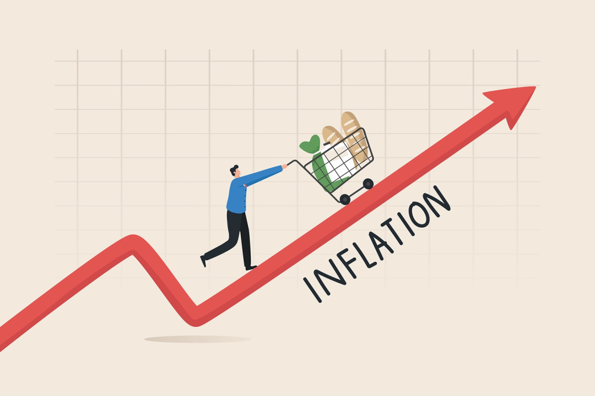

Income Inequality Across the World
This problem is not only limited to NYC but everywhere else in the world. It creates a gap between social classes, which depends on various factors such as population, majority ethnicity/race, historical past, average income, education, and jobs.
Overview
Income inequality affects many communities, especially in urban areas like NYC. It creates economic and social divides that are detrimental to community growth and harmony.
Problem of Income Differentiation
Income differentiation hits hard on urban communities, especially in NYC, creating conflicting economic and social conditions between the upper and lower classes. Some reasons for income inequality include a lack of affordable housing, low-quality education, and historical factors.
Impacts
1. Housing Inequality
High income differentiation leads to a lack of affordable housing for lower-income groups, causing displacement and homelessness.
2. Educational Disparities
Wealthier neighborhoods have better schools and resources, creating unequal opportunities for children in low-income areas.
3. Health Disparities
Income gaps result in unequal access to healthcare, with low-income individuals facing worse health outcomes and shorter life expectancy.
Additional Information
What is Food Justice?
Food justice explores how underserved neighborhoods struggle to find healthy food options without traveling long distances.
Income Inequality Linked to Social Vulnerability to Disasters
Natural disasters and emergencies can exacerbate income inequality, further highlighting social vulnerabilities.
Sustainability Efforts to Reduce Inequality
Global organizations are working to create equitable and sustainable systems to address income gaps.